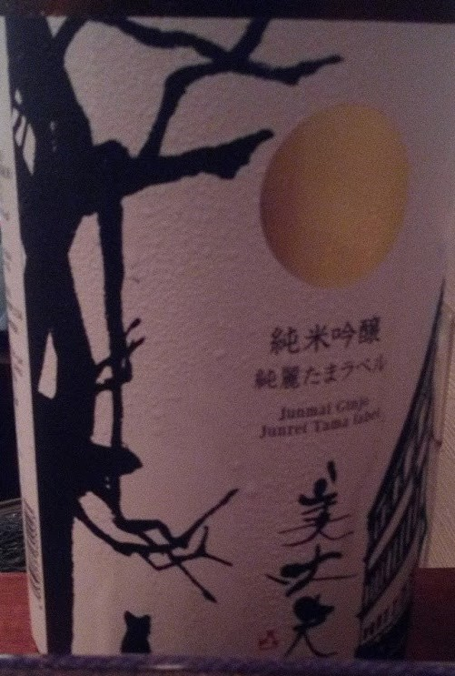
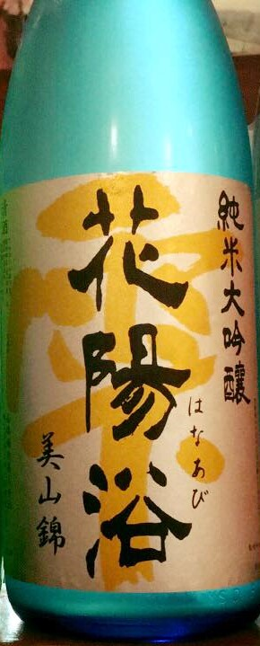
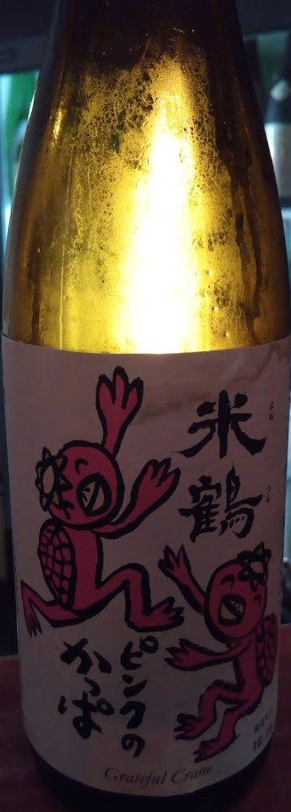

私と日本酒、そしておすすめの一杯
この記事は mstdn.maud.io Advent Calendar 2018 12日目の記事です。
自己紹介
MulticolorWorldです。普段は:don:にいます。野球とゲームと酒の話しかしてません。
私と日本酒
日本酒について知らない人は多分いないと思いますが飲んだことがある人は多くないかもしれません。
自分は普段は日本酒バーのような場所に行き飲んでいます。時々写真をあげてます。
あとは日本酒検定や唎酒師のような資格を取ったり、蔵見学や蔵開きにも時々行きます。一つの趣味みたいなものです。
おすすめの一杯
すっきり系
美丈夫 純米吟醸 純麗たまラベル

非常にすっきりとした味の中にも旨味を感じる飲みやすいタイプの日本酒です。
くせが非常に少なく、アルコール臭さも感じにくいので、日本酒ビギナーの人でも飲みやすいと思います。
また、料理の味を邪魔しにくいので、薄味の料理にも合います。
酸系
花陽浴 純米大吟醸 美山錦 生原酒 直汲み

さわやかな甘さが特徴の日本酒です。
日本酒の甘さを表現するのによくフルーツを例に出すことが多いのですが、花陽浴はパイナップルのような甘味と酸味が調和した味が特徴的です。香りもさわやかさがあります。
味自体は強く複雑なので、料理と合わせるよりはこれ単体で楽しむ方が良いと思います。
低アルコール系
米鶴 純米 ピンクのかっぱ
